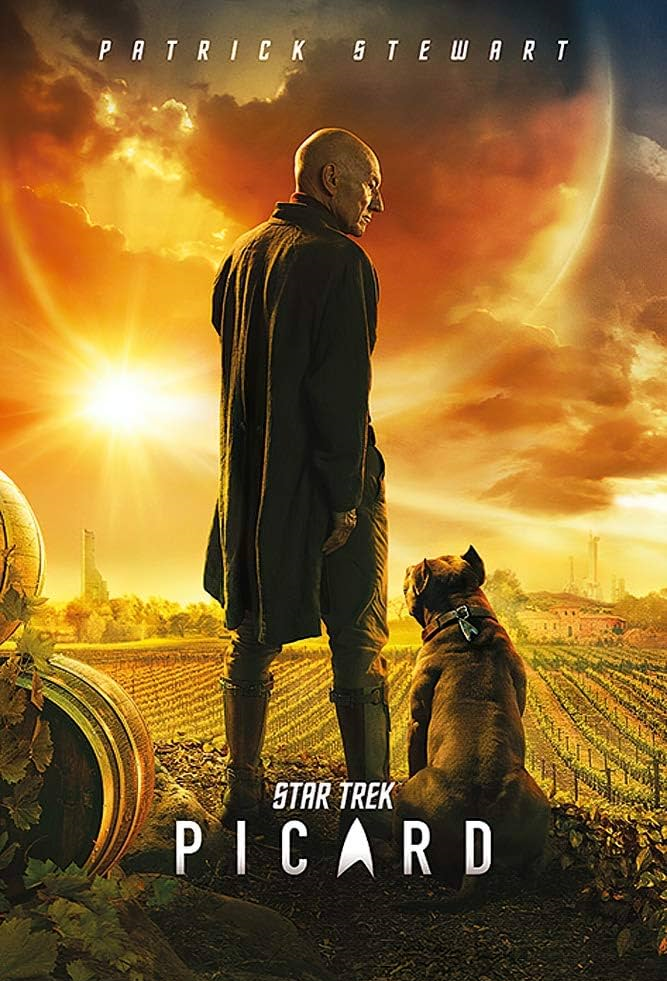

@c6reviews.
@c6reviews.
| Star Trek: Picard | |
|---|---|
|  | |
| Abbreviation: | PIC |
| Episodes: | 30 |
| Air dates: | Jan 23, 2020 – April 20, 2023 |
| In-universe years: | 2399 – 2402 |
| Universe Timeline Go to full timeline ➡︎ | |||
|---|---|---|---|
| 2378 | |||
| 2379 | Star Trek: Nemesis | ||
| 2380 | |||
| 2381 | |||
| 2382 | |||
| 2383 | |||
| 2384 | |||
| 2385 | Rogue Synth Attack on Mars (April 5) | ❰ PIC: Maps and Legends | SHO: "Children of Mars" |
| 2386 | |||
| 2387 | Romulus Destroyed by Supernova | Nero and Spock thrown back in time to 2233 and 2258 | |
| 2388 | |||
| 2389 | |||
| 2390 | |||
| 2391 | |||
| 2392 | |||
| 2393 | |||
| 2394 | |||
| 2395 | ❱❱ TNG: All Good Things... | ||
| 2396 | |||
| 2397 | |||
| 2398 | |||
| 2399 | STAR TREK PICARD (PIC) |
||
| 2400 | |||
| 2401 | |||
| 2402 | |||
| 2403 | |||
Star Trek: Picard essentially tells three distinct stories, one each season, about Jean-Luc Picard, who is famous for being the captain of the USS Enterprise NCC‑1701‑D in Star Trek: The Next Generation. In-universe, the stories start in 2399, nearly thirty years since The Next Generation ended in 2370, and twenty years after we last saw Jean-Luc in 2379, during the events of Star Trek: Nemesis. This is close to being the same amount of time that passed in the real world, with Picard first airing in January 2020, seventeen years after Nemesis premiered in December 2002. This is the ninth Star Trek series to air (when including Short Treks).
When Sir Patrick Stewart was approached about making the show, he made it very clear that he wanted it to be separate and distinct from The Next Generation, in other words, he had no intention of this series being “TNG, Part 2.” This led to some fans not especially like the series – particularly Season 2 – because they probably would have preferred something closer to, well, “TNG, Part 2.” Still, I firmly believe that if one can allow themselves to enjoy the show based on its own merits and not hold it to a certain genre, one can find that this series delivers some excellent storytelling.
An excellent follow-up to TNG
Picard Spoiler Policy
- Generally speaking, you can safely read any of the episode guides without fear of spoiling any plot reveals or twists in a single episode, but don't read ahead! Episode guides might spoil something that happened in a previous episode!
- Each episode review is a non-spoiler version by default. Spoilers can be revealed with a toggle switch on each review, or all of them can be revealed with a main switch on the left of the screen. (The switch will reset on each page load.)
Understanding Ratings and Recommendations
Everyone has different tastes and opinions, and my opinions certainly aren't always popular. To help combat that, a “final score” on any episode is an average of my rating and the ratings from 3 other independent sources, including IMDb. Though, my rating is weighted a little higher in that calculation, because this is my website, after all. In addition to the ratings, I also provide a “Watch Recommendation” which doesn't necessarily have anything to do with the quality of the episode. Rather, the watch recommendation is based on how important the episode is to the overall story of the entire series, whether that episode is good or bad. See below for more details.
Episode Scores
| Episode Rating | Rating Value Range | Description |
|---|---|---|
| My rating |
★☆☆☆☆ ★★☆☆☆ ★★★☆☆ ★★★★☆ ★★★★★ |
|
| Ex Astris Scientia rating | 0–10 |
|
| Normalized IMDb rating |
0–10 converted from 5.4–9.4 |
|
| FINAL SCORE | 0–10 |
|
Nostalgia Meter


The Nostalgia Meter measures how much content there is in the episode that references or reminds us of previous shows, especially The Next Generation.
A high rating (pointing to the green section on the right side of the meter), means there are a lot of references and nostalgia. These episodes usually contain a lot of “fan service” for long-time fans of Star Trek.
A low rating (pointing to the red section on the left side of the meter), means that the episode contains mostly brand-new content and few to no references to past Trek shows. This doesn't make them bad episodes, just different!